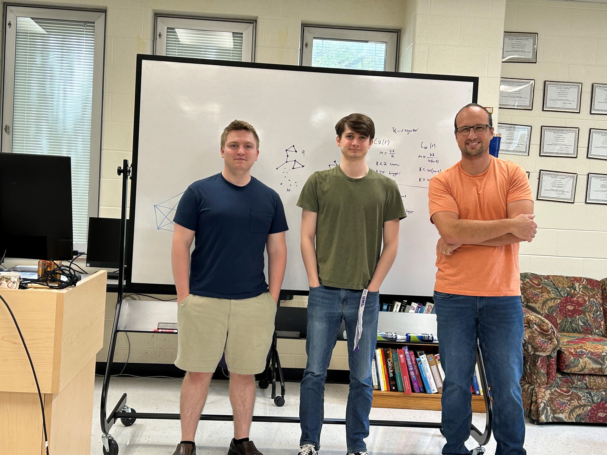

In Summer 2024 I mentored JMU students Robert Petro and Connor Phillips in a 6-week research project.

From left-to-right: Connor, Robert, Josh
Connor and Robert started their summer work by immediately diving into Conway's 99-graph problem. This longstanding problem asks whether there exists a graph with 99 vertices where each edge is contained in a unique triangle, and each pair of non-adjacent vertices are opposite corners of a unique quadrilateral. (It turns out such a graph must be 14-regular, and so is strongly regular).
Here is a sample of their activities this summer:
- Trying to construct such an srg(99, 14, 1, 2). They learned about all sorts of graph constructions related to the Steiner system S(3,6,22).
- Generally investigating locally linear graphs. Eventually they were lead to defining the notion of \omega-clique regular graphs.
- Some interesting examples of these graphs include: locally linear graphs, collinearity graphs of GQ(s,t), icosidodecahedron (as a non-regular but beautiful example), Rook graphs, some Latin square graphs (more generally, graphs from orthogonal arrays).
- They obtained nice results about these graphs, and especially the graph C(G) on their \omega-cliques. This generalizes the important example of the line graph.
- Some results on recovering a graph G from C(G), by incorporating the idea of weighting the cliques.
- They studied the relation of elementary divisors of (graphs attached to) G, to those of C(G).
- They found bounds on the spectrum of the clique graph, and exact results in certain cases.
- They found some interesting results on strongly regular graphs, for example: a complete characterization of when an srg has a strongly regular clique graph (there are only finitely many such examples); relations of the parameters of an srg to the uniformity of sizes of maximal cliques and the number of cliques containing a vertex; some new characterizations of known srgs as clique graphs.
- They applied these results to cases where the existence of a graph is uncertain, in particular to the 99-graph problem, to get obtain the previously unknown spectrum of the graph on triangles.
Many of these investigations made their way into a paper they wrote together. See their excellent paper here.
They gave an outstanding talk at SUMS 2024. slides
Back to my homepage